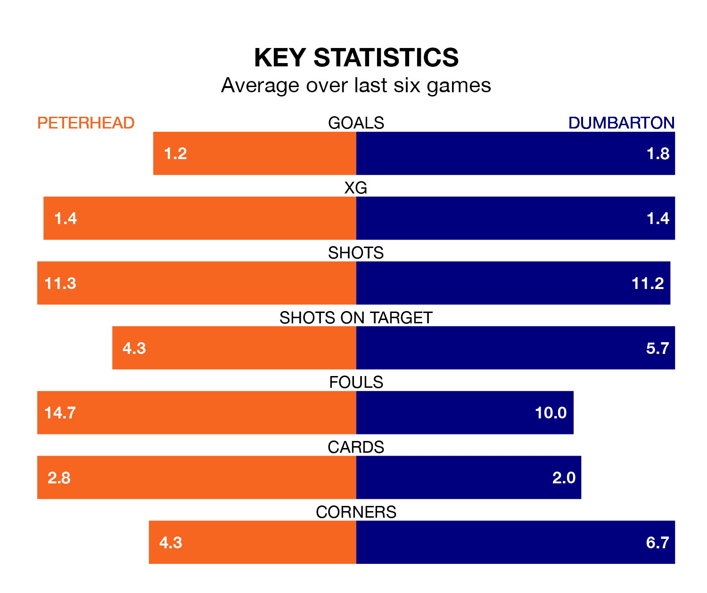

Peterhead host Dumbarton in Tuesday's late match at the Balmoor Stadium looking to bounce back from defeat last time out in League Two.
The Blue Toon, who sit second in the league after 18 games, fell to a 1-0 home defeat to Spartans on Saturday.
They face a Dumbarton side who also lost their last match, a 2-1 defeat to East Fife, and who sit fourth in the table.
With 32 goals in 17 games so far this season, Dumbarton are the league's second-highest scorers with 1.9 goals per game. And they are conceding fewer than average, letting in 20 goals at a rate of 1.2 per game.
Peterhead are also above average scorers, with 1.7 goals per game, compared to a league average of 1.4. They have conceded 1.0 goal per game.
In the last 10 years, Peterhead and Dumbarton have played each other on 13 occasions. Peterhead won seven of them, Dumbarton four, and they drew twice.
On average, the Blue Toon scored 1.8 goals and the Sons 1.4 in those matches.
Their last meeting was on September 23, when Peterhead won 1-0 away.
With Brett Long between the sticks, the Sons can rely on one of the league's safest pair of hands. He has kept five clean sheets in his 14 appearances this season, and only two other 'keepers – Stenhousemuir's Darren Jamieson and Forfar Athletic's Marc McCallum – have been able to prevent the opposition scoring on more occasions in League Two.
In the Blue Toon's net, Stuart McKenzie has four clean sheets in 17 games. He has conceded a goal every 85 minutes, 50% more often than the 126 minutes between goals for Long.
The home team are in mixed form in League Two, with two wins and a draw from their last six games.
With three wins and a draw over that period, the visitors' form is better – they have taken 10 points from 18, compared to Peterhead's seven.
Updated: 11:31, 09/01/24